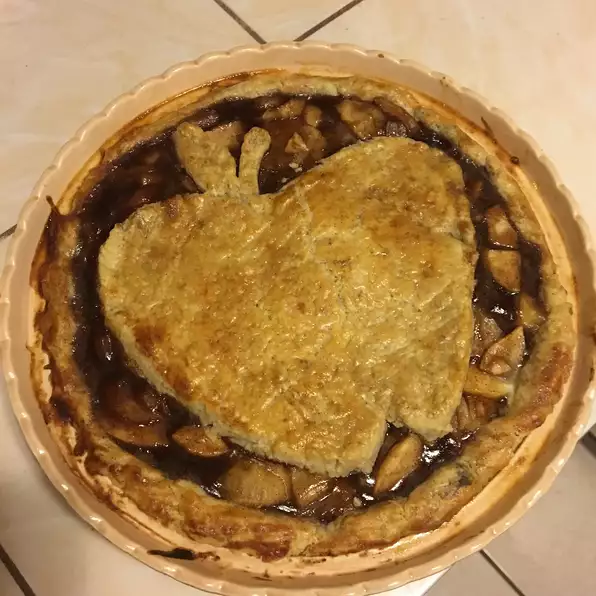

Apple Pie

Description
This is the best apple pie ever, at least according to its listing on the website I originally found it.
The recipe is quite simple, but the combination of ingredients, spices, and the love you put into the pie make all the difference.
Ingredients
- ¼ cup white sugar
- 1 ½ teaspoons ground cinnamon
- ½ teaspoon ground nutmeg
- 1 pastry for a 9-inch double crust pie
- 5 apples, peeled, cored, and sliced
- 2 tablespoons maple syrup
- 2 teaspoons vanilla extract
Steps
- Preheat an oven to 350 degrees F (175 degrees C). Stir together the sugar, cinnamon, and nutmeg in a small bowl; set aside. Press one of the pastries into the bottom of a 9-inch pie pan; reserve the crust.
- Toss the apples with maple syrup and vanilla extract. Spread 1/3 of the apples into the pie pan and sprinkle with the sugar mixture. Repeat the layers with the remaining apples and sugar. Cover the pie with the top crust and pinch the edges to seal.
- Bake in the preheated oven until the crust is golden brown, 30 to 35 minutes. Allow to cool before serving.